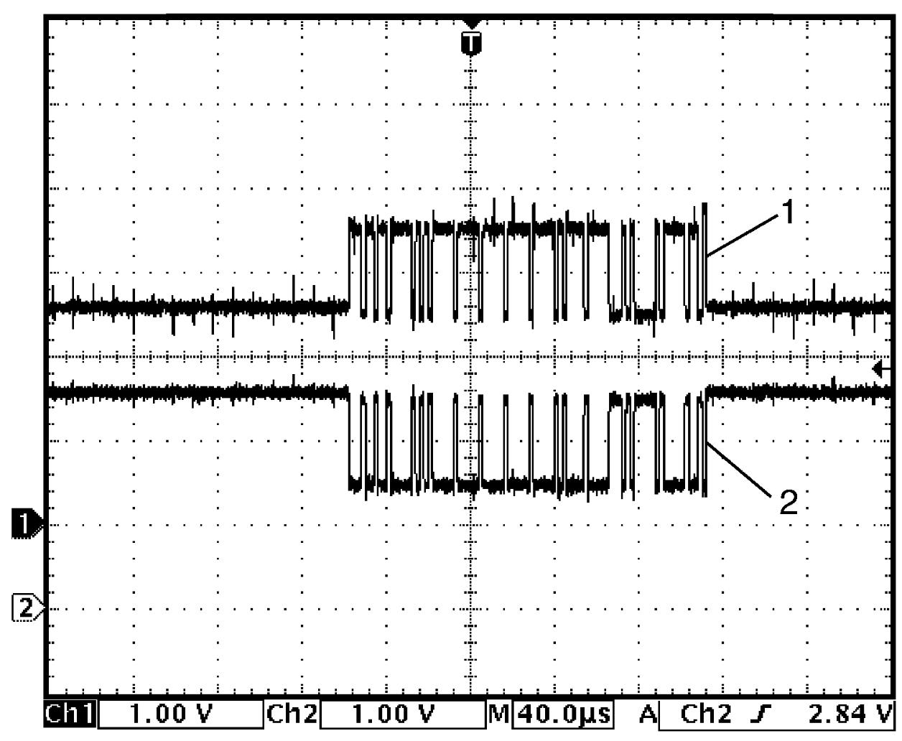

3B
| Inspection of 4WD Control Module and Its Circuits |
4WD control module and its circuits can be checked by measuring voltage and pulse signal at connector connected to 4WD control module.
NOTICE:
If you connect a voltmeter or an ohmmeter directly to the 4WD control module terminals with the control module connector disconnected, the control module will be damaged.
Never connect a voltmeter or an ohmmeter directly to any terminal of the 4WD control module with the control module connector disconnected.
Voltage and Signal Check
1)Connect 4WD control module connector to 4WD control module.
2)Check voltage and/or pulse signal at each terminal of connectors using voltmeter (1) and oscilloscope (2).

 "Expand image")
| [A]: | 4WD control module connector (View: [a]) |
NOTE:
•As each terminal voltage is affected by battery voltage, check that battery voltage is 12 V or more when ignition is “ON”.
•Voltage with asterisk (*) cannot be measured with voltmeter because it is pulse signal. Use oscilloscope for its check if necessary.
•Voltage with asterisk (*) cannot be measured with voltmeter because it is pulse signal. Use oscilloscope for its check if necessary.
“L14” connector
| Terminal No. | Circuit | Normal voltage | Condition |
|---|---|---|---|
| L14-1 | — | — | — |
| L14-2 | Rear drive coupling unit power supply circuit | 10 – 14 V | Engine running |
| 0 V | Other than above condition | ||
| L14-3 | Rear drive coupling unit signal circuit | 10 – 14 V | Engine running |
| 0 V | Other than above condition | ||
| L14-4 | — | — | — |
| L14-5 | — | — | — |
| L14-6 | Transfer oil temperature sensor signal circuit | About 2.1 V | Transfer oil temperature 40 °C (104 °F) |
| About 0.5 V | Transfer oil temperature 100 °C (212 °F) | ||
| L14-7 | Transfer oil temperature sensor ground circuit | 0 V | — |
| L14-8 | — | — | — |
| L14-9 | — | — | — |
| L14-10 | 4WD control module ground circuit | 0 V | — |
| L14-11 | 4WD control module power supply circuit | 10 – 14 V | — |
| L14-12 | Ignition power supply circuit | 10 – 14 V | Ignition: “ON” |
| 0 V | Ignition: “OFF” | ||
| L14-13 | — | — | — |
| L14-14 | — | — | — |
| L14-15 | — | — | — |
| L14-16 | — | — | — |
| L14-17 | — | — | — |
| L14-18 | — | — | — |
| L14-19 | — | — | — |
| L14-20* | CAN (high) communication circuit | Refer to reference waveform. CAN communication signal |
|
| L14-21 | — | — | — |
| L14-22* | CAN (high) communication circuit | Refer to reference waveform. CAN communication signal |
|
| L14-23* | CAN (low) communication circuit | Refer to reference waveform. CAN communication signal |
|
| L14-24 | Rear drive coupling air temperature sensor ground circuit | 0 V | — |
| L14-25 | Rear drive coupling air temperature sensor signal circuit | About 2.6 V | Rear drive coupling air temperature 20 °C (68 °F) |
| About 0.7 V | Rear drive coupling air temperature 80 °C (176 °F) | ||
| L14-26* | CAN (low) communication circuit | Refer to reference waveform. CAN communication signal |
|
Reference Waveform
Oscilloscope display
Shown below is typical waveform display provided by oscilloscope.
NOTE:
•Display includes the following types of data:

•Waveform varies depending on measurement condition and vehicle spec.
 "Expand image")
| [a]: | Waveform of channel 1 | [c]: | VOLT/DIV of each channel |
| [b]: | Ground level of each channel | [d]: | TIME/DIV |
CAN communication signal
CAN (High) communication circuit signal (1)
| Channel | Probe | Terminal No. |
|---|---|---|
| 1 | + | L14-22 L14-20 |
| – | L14-10 |
CAN (Low) communication circuit signal (2)
| Channel | Probe | Terminal No. |
|---|---|---|
| 2 | + | L14-23 L14-26 |
| – | L14-10 |
Measurement condition
•Engine: Stop
•Ignition: “ON”
•Ignition: “ON”

 "Expand image")